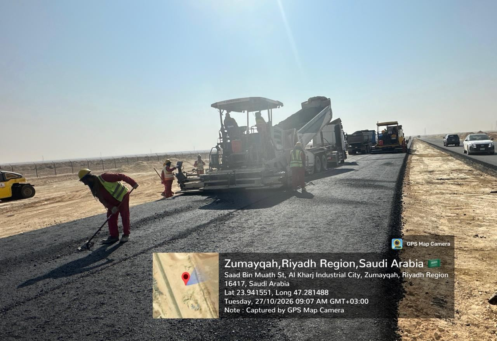
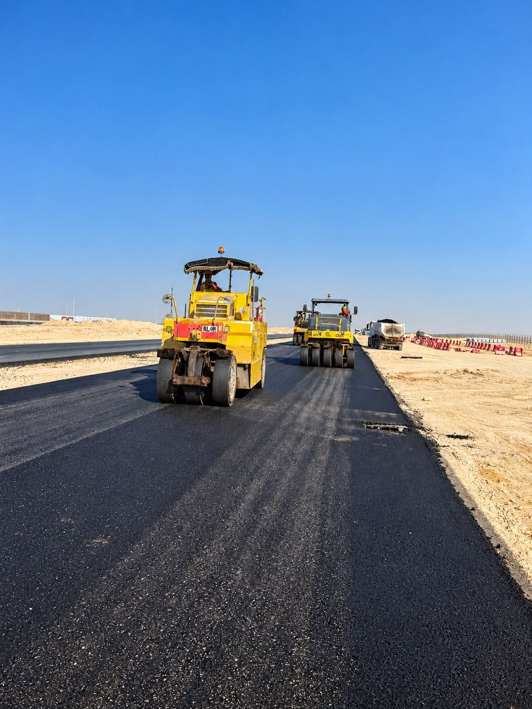
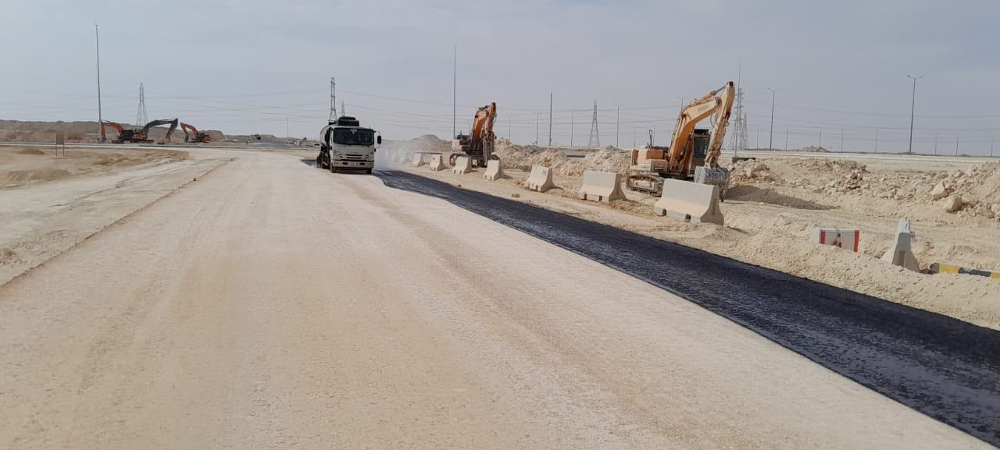
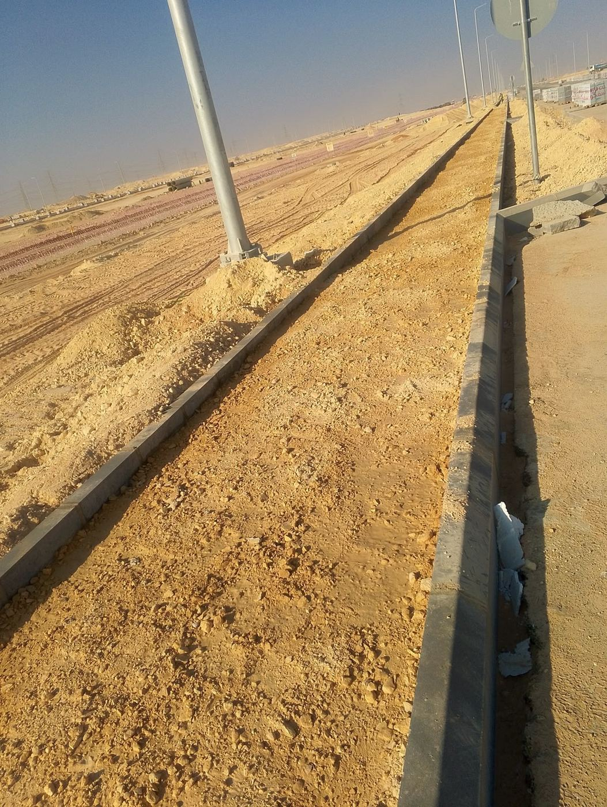
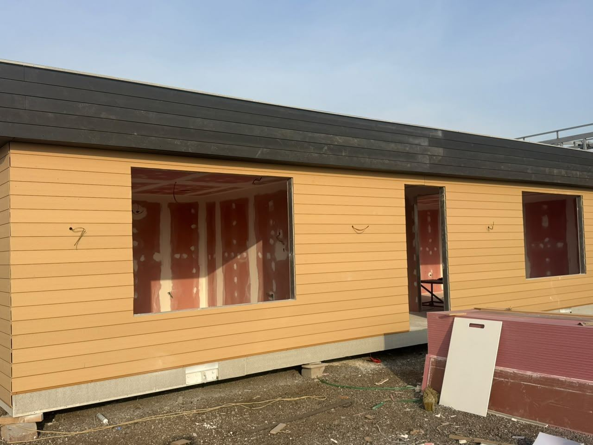
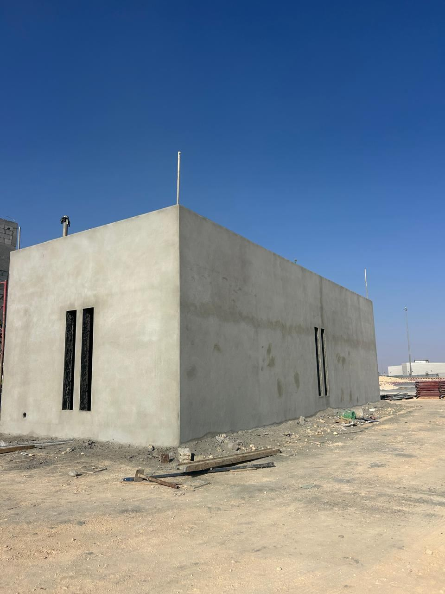

Development of Infrastructure Networks, Al-Kharj Industrial City
Scope: infrastructure networks over about 3.5 km² in Zones A and B and the Labour Community Area, around 100 km south-east of Riyadh.
Status at a glance
Progress is measured as physical % complete, weighted by budgeted man-hours. A new revised plan was issued this week: planned progress to date is now 48.4%, down from 52.5% under the previous plan. Against it the project is 0.9% ahead, after gaining 2.2% this week.
Site photos this week
Six photos from the 26-Oct-2026 weekly report, GPS-stamped 27-Oct-2026 where the stamp is visible. Asphalt, curbs and street lighting continue, and the site office cabin and a concrete building shell are progressing. Select a photo to view it larger, then use the arrows to move between photos.












Progress S-curve
Cumulative physical progress (man-hour weighted), monthly. Source: Physical-Chart Data sheet.
| Week ending | Planned % | Actual % | Variance | Gained this week | SPI |
|---|---|---|---|---|---|
| 28-Sep-2026 | 47.2 | 42.5 | −4.7 | +0.8 | 0.90 |
| 05-Oct-2026 | 50.1 | 43.4 | −6.7 | +0.9 | 0.87 |
| 12-Oct-2026 | 51.4 | 45.7 | −5.7 | +2.3 | 0.89 |
| 19-Oct-2026 | 52.5 | 47.0 | −5.5 | +1.3 | 0.89 |
| 26-Oct-2026 | 48.4* | 49.3 | +0.9 | +2.2 | 1.02 |
Physical % complete from the weekly reports for 28 Sep to 26 Oct. * From 26 Oct the planned value comes from the new revised plan, so the move from −5.5 to +0.9 reflects the new plan as well as this week's progress.
Progress by phase
Physical progress to date by WBS, weighted by budgeted man-hours.
| Phase | Weight | Planned | Actual | Variance | SPI | Status |
|---|---|---|---|---|---|---|
| Engineering | 3% | 100.0% | 100.0% | 0.0 | 1.00 | ✓ Complete |
| Procurement | 20% | 68.6% | 76.5% | +7.9 | 1.12 | ▲ Ahead |
| Construction | 67% | 44.8% | 46.2% | +1.4 | 1.03 | ▲ On track |
| Testing & commissioning | 10% | 16.0% | 0.0% | −16.0 | 0.00 | ▼ Not started |
| Total | 100% | 48.4% | 49.3% | +0.9 | 1.02 | ▲ On track |
The P6 update (schedule revision ICKM01-22.Oct.2026, data date 17-Oct-2026) has 5,877 activities: 3,671 completed, 254 in progress and 1,952 not started. Its scheduled finish is 27-Apr-2028, 147 days after the contract date.
Scope of work: quantities
Total scope, quantity finished and quantity remaining for each network, from the quantity tables on the layout pages of the 26-Oct-2026 progress presentation. For pipes, cables and manholes, "finished" means installed; the last column shows how much is also backfilled. "This week" is the quantity executed since the 19-Oct-2026 presentation.
| Scope item | Zone | Unit | Total | Finished | This week | Remaining | % finished | Backfilled |
|---|
Milestones
The weekly report and the P6 schedule update give different forecasts for the interim milestones. Both are shown so the difference can be resolved with the contractor.
| Milestone | Baseline | Weekly report forecast | P6 update forecast | P6 float (days) | Status |
|---|---|---|---|---|---|
| Site handover | 03-Dec-2025 | 03-Dec-2025 | 03-Dec-2025 (actual) | – | ✓ Done |
| Complete mobilisation | 02-Jan-2026 | 02-Jan-2026 | – | – | ✓ Done |
| Road works | 02-Oct-2026 | 07-Nov-2026 (+36 d) | 20-Dec-2026 | −68 | ▼ Late |
| Medium-voltage network | 02-Oct-2026 | 31-Oct-2026 (+29 d) | 28-Jan-2027 | −102 | ▼ Late |
| Storm network | – | – | 03-Mar-2027 | −24 | ▼ At risk |
| Sewage network | – | – | 14-Mar-2027 | −33 | ▼ At risk |
| Telecom network | – | – | 25-May-2027 | −94 | ▼ Late |
| Irrigation network | – | – | 18-Jul-2027 | −141 | ▼ Late |
| Potable water network | – | – | 30-Oct-2027 | −230 | ▼ Late |
| All networks | 02-Feb-2027 | 02-Feb-2027 | – | – | ? Conflicts with P6 |
| Landscape | – | – | 19-Apr-2028 | −118 | ▼ Late |
| Project handover | 02-Dec-2027 | 02-Dec-2027 | 27-Apr-2028 | −126 | ▼ Late |
Procurement of key materials
Share of total quantity delivered to site. Source: Procurement sheet, weekly report 26-Oct-2026.
Manpower
Monthly head count on site, planned vs actual. Source: Manpower sheet.
October head count is 529 against 677 planned (−22%). The 26-Oct report repeats last week's October figure. The plan peaks at 841 in November 2026.
Cost and invoicing
Contract value
All values in SAR. The BOQ total plus 15% VAT matches the contract value. No change orders are registered.
Invoices
Invoicing is 16.1% of the contract value against 49.3% physical progress. The invoice log records approval dates for all five invoices, but its summary shows 0 PM-approved and 0 paid. The payment status needs confirming.
Health, safety and quality
Safety Score 0.90
Quality Score 0.93
Quality week: 18–24 Oct 2026.
Open issues and risks
| Issue | Owner | Detail |
|---|---|---|
| Site obstacles | Client | Obstacles between the factory boundary and Local Roads 19–20. Old rooms, a fenced store and signage on Local Road 18. A diesel tank whose removal is unassigned. The crusher area is not yet officially handed over. |
| MV network clashes | Contractor | The MV route runs too close to the water and irrigation networks, which is preventing internal MV works from starting. |
| Box culvert, Zone A | Contractor | Excavation for the stormwater box culvert conflicts with existing LV/MV cables and water and irrigation pipelines. |
| Asphalt continuity | Contractor | Asphalt works need to continue without interruption to recover the road milestone. |
| Milestone recovery | Contractor | Engineering and procurement recovery are closed; construction recovery is ongoing. |
| Cost savings | Contractor | Identify potential financial and technical savings. |
Open risks in the register: weather (rain, wind, dust), supply of subgrade fill, manholes and pipes, deep excavation safety, existing services and roads, and delays in key materials.
Data notes
- Several summary panels in the weekly report workbook (submittals, procurement, manpower by trade, top issues) show #REF! errors, so figures were taken from the detail sheets.
- Milestone forecasts in the weekly report do not match the P6 update, and the two now disagree on the completion date as well; see Milestones.
- A new revised plan was issued with the 26-Oct report. Planned progress to date fell from 52.5% to 48.4%, so most of the change from −5.5% to +0.9% comes from the new plan rather than from this week's work.
- The P6 update uploaded on 26 Oct has a data date of 17-Oct-2026, the same as the previous week's file, so it does not include the last week of work.
- The manpower sheet repeats last week's October figure (529).
- Approved MIRs show 49 cumulative this week against 213 last week; the counter appears to have been reset.
- The quality sheet lists 53,207 approved FIRs for the previous week, which looks like a data-entry error.
- Weekly reports are in W1–W5 (28 Sep to 26 Oct). Copies of the original Excel and PDF files were also uploaded into W1's MD Files folder; they belong in All Files.
- Scope quantities: this week's presentation adds the missing Potable Water Zone A table and corrects the Zone A telecom total from 155,000 LM to 34,149 LM. Street-light pole counts are still labelled LM in the source but are counted in units (EA).